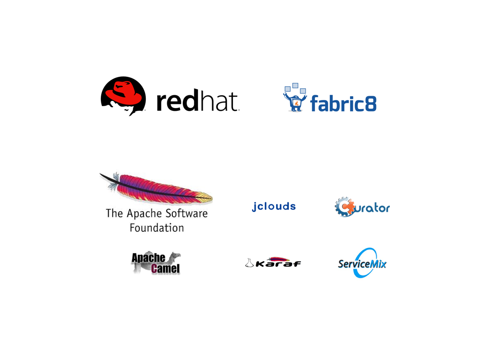

Making the best out of Jenkins on Kubernetes and Openshift
Ioannis Canellos

about me

- principal software engineer @red hat
- member @apache software foundation
agenda
- getting started
- plugin overview
- advanced topics
- tips
- q & a
getting started
- docker images
- jenkins
- community
- openshift
- agents
- jenkins
- kubernetes manifests
scaling jenkins
jenkins scales using agents
- on demand
- adhoc
build platform
each build requires a set of tools, but who configures?
- different tools?
- different tool versions?
duplicating configuration
docker pipeline
package tools into containers, reference containers via pipelines
- pros:
- easy to use
- reproducible
- cons:
- requires docker binaries (cli)
- requires docker access (socket)
- no support for kubernetes specific resources (e.g. secrets)
using docker pipeline
node { docker.image('golang').inside { git 'https://github.com/iocanel/hello-go.git' sh 'go build -o bin/helloworld helloworld.go' } }
adding docker build
node { docker.image('golang').inside { git 'https://github.com/iocanel/hello-go.git' sh 'go build -o bin/helloworld helloworld.go' docker.build('iocanel/hello-go') } }
kubernetes pipeline pt. 1
1st attempt: port docker pipeline to kubernetes
- pros:
- support for kubernetes resources
- cons:
- requires shared file system
kubernetes plugin
co-locate/sidecar agent with build tools to lift sharing limitations
- pros:
- runs everywhere
- cons:
- verbose
- not as intuitive as the docker/kubernetes pipeline
using kubernetes plugin
podTemplate(name:'mypod', label: 'provides-go', containers: [ containerTemplate(name: 'golang', image: 'golang:1.8.0', ttyEnabled: true, command: 'cat')]) { node('provides-go') { container('golang') { git 'https://github.com/iocanel/hello-go.git' sh 'go build -o bin/helloworld helloworld.go' } } }
kubernetes pipeline pt. 2
re-write on top of kubernetes plugin to have best of both worlds
- pros:
- hides complexity
- cons:
- its experimental
testing
Testing individual projects is not enough
- integration testing
- system testing
arquillian cube

arquillian cube pt.2
A tool to simplify integration/system testing on kubernetes
- generate a test namespace / project
- deploy all required resources
- supports f-m-p
- supports shell scripts
- supports dependencies
- wait until everything is ready
- run the test suite
- inject resources
- simplify service access
arquillian cube limitations
Arquillian cube rocks, but has some limitations:
- it mostly aims java
arquillian steps
An arquillian cube wrapper to use in your pipelines.
- manage test namespaces/projects
- setup test environments
- validate test environments
- clean things up
creating a test namespace
inNamespace(prefix: 'testns') { def namespace = currentNamespace() sh "What happens in ${namespace} stays in ${namespace}" }
setting up environment
inNamespace(prefix: 'testns') { createEnvironment(environmentConfigUrl: "file:${env.WORKSPACE}/kubernetes.yml") stage('run system tests') { } }
deployments
Multiple ways to deploy…
- Arquillian steps:
createEnvironment(environmentConfigUrl: "file:${env.WORKSPACE}/kubernetes.yml")
- Openshift jenkins plugin:
openshiftCreateResources(yaml: "file:${env.WORKSPACE}/kubernetes.yml")
- manual / cli
tips

use secrets
domain = Domain.global() store = Jenkins.instance .getExtensionList('com.cloudbees.plugins.credentials.SystemCredentialsProvider')[0] .getStore() githubAccount = new UsernamePasswordCredentialsImpl( CredentialsScope.GLOBAL, "github", "Github Account Credentials", new File('/mnt/secrets/github/username').text new File('/mnt/secrets/github/token').text ) githubAccessToken = new StringCredentialsImpl( CredentialsScope.GLOBAL, "githubaccesstoken", "Github Access Token", Secret.fromString(new File('/mnt/secrets/github/token').text)) store.addCredentials(domain, githubAccount) store.addCredentials(domain, githubAccessToken)
correlate jobs with pods
sometimes the console is not enough
- describe pods
- inspect pods
- exec into pods
def mylabel = "${env.JOB_NAME}" + "_" + "${env.BUILD_NUMBER}" .replaceAll('[^A-Za-z0-9]', '_') podTemplate(label: "$mylabel") { ... }
composition vs inheritance
no need to create new images just to add a single binary
podTemplate(name:'mypod', label: 'provides-maven-and-oc', containers: [ containerTemplate(name: 'maven', image: 'maven', ttyEnabled: true, command: 'cat'), containerTemplate(name: 'oc', image: 'openshift/origin:v1.5.0-rc.0', ttyEnabled: true, command: 'cat')]) { node('provider-maven-and-oc') { stage 'copy oc to workspace' container('openshift') { sh 'mkdir ${HOME}/bin && cp $(which oc} ${HOME}/bin' } stage 'build and create environment' container('maven') { sh 'mvn clean install && ${HOME}/bin/oc create -f target/openshift.yml' } } }
use pipeline libraries
not everyone is a pipeline guru…
- promote readability
- promote reusability
- hide implementation details
love thy CI/CD …
- use source control for everything
- collocate code and pipelines
- no snapshots no latest
resources
This presentation:
Plugins:
- https://github.com/jenkinsci/kubernetes-plugin
- https://github.com/jenkinsci/kubernetes-pipeline-plugin
- https://github.com/openshift/jenkins-plugin
Pipeline Libraries:
people to follow
| Carlos Sanchez | |
| James Strachan | |
 |
James Rawlings |
questions?

the end
Thank you!